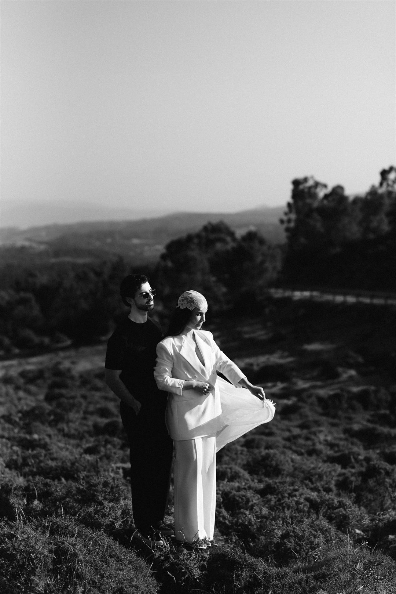

Há dias que se tornam memórias. E memórias que ficam para sempre.
Save the date
Guardem esta data. Vamos casar, e não imaginamos este dia sem vocês.
Raquel & Flávio
Celebração
Como chegar
Confirmação de presença
Informações
Local, horário e confirmação de presença serão partilhados em breve.
